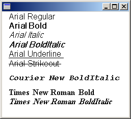

The PrivateFontCollection class inherits from the FontCollection abstract base class. You can use a PrivateFontCollection object to maintain a set of fonts specifically for your application.
A private font collection can include installed system fonts as well as fonts that have not been installed on the computer. To add a font file to a private font collection, call the PrivateFontCollection::AddFontFile method of a PrivateFontCollection object.
[!Note]
When you use the GDI+ API, you must never allow your application to download arbitrary fonts from untrusted sources. The operating system requires elevated privileges to assure that all installed fonts are trusted.
Â
The FontCollection::GetFamilies method of a PrivateFontCollection object returns an array of FontFamily objects. Before you call FontCollection::GetFamilies, you must allocate a buffer large enough to hold that array. To determine the size of the required buffer, call the FontCollection::GetFamilyCount method and multiply the return value by sizeof(FontFamily).
The number of font families in a private font collection is not necessarily the same as the number of font files that have been added to the collection. For example, suppose you add the files ArialBd.tff, Times.tff, and TimesBd.tff to a collection. There will be three files but only two families in the collection because Times.tff and TimesBd.tff belong to the same family.
The following example adds the following three font files to a PrivateFontCollection object:
The code calls the FontCollection::GetFamilyCount method of the PrivateFontCollection object to determine the number of families in the private collection, and then calls FontCollection::GetFamilies to retrieve an array of FontFamily objects.
For each FontFamily object in the collection, the code calls the FontFamily::IsStyleAvailable method to determine whether various styles (regular, bold, italic, bold italic, underline, and strikeout) are available. The arguments passed to the FontFamily::IsStyleAvailable method are members of the FontStyle enumeration, which is declared in Gdiplusenums.h.
If a particular family/style combination is available, a Font object is constructed using that family and style. The first argument passed to the Font constructor is the font family name (not a FontFamily object as is the case for other variations of the Font constructor), and the final argument is the address of the PrivateFontCollection object. After the Font object is constructed, its address is passed to the DrawString method of the Graphics class to display the family name along with the name of the style.
#define MAX_STYLE_SIZE 20
#define MAX_FACEANDSTYLE_SIZE (LF_FACESIZE + MAX_STYLE_SIZE + 2)
PointF pointF(10.0f, 0.0f);
SolidBrush solidBrush(Color(255, 0, 0, 0));
INT count = 0;
INT found = 0;
WCHAR familyName[LF_FACESIZE];
WCHAR familyNameAndStyle[MAX_FACEANDSTYLE_SIZE];
FontFamily* pFontFamily;
PrivateFontCollection privateFontCollection;
// Add three font files to the private collection.
privateFontCollection.AddFontFile(L"c:\\Winnt\\Fonts\\Arial.ttf");
privateFontCollection.AddFontFile(L"c:\\Winnt\\Fonts\\CourBI.ttf");
privateFontCollection.AddFontFile(L"c:\\Winnt\\Fonts\\TimesBd.ttf");
// How many font families are in the private collection?
count = privateFontCollection.GetFamilyCount();
// Allocate a buffer to hold the array of FontFamily
// objects returned by GetFamilies.
pFontFamily = new FontFamily[count];
// Get the array of FontFamily objects.
privateFontCollection.GetFamilies(count, pFontFamily, &found);
// Display the name of each font family in the private collection
// along with the available styles for that font family.
for(INT j = 0; j < count; ++j)
{
// Get the font family name.
pFontFamily[j].GetFamilyName(familyName);
// Is the regular style available?
if(pFontFamily[j].IsStyleAvailable(FontStyleRegular))
{
StringCchCopyW(familyNameAndStyle, LF_FACESIZE, familyName);
StringCchCatW(familyNameAndStyle, MAX_FACEANDSTYLE_SIZE, L" Regular");
Font* pFont = new Font(
familyName, 16, FontStyleRegular, UnitPixel, &privateFontCollection);
graphics.DrawString(familyNameAndStyle, -1, pFont, pointF, &solidBrush);
pointF.Y += pFont->GetHeight(0.0f);
delete(pFont);
}
// Is the bold style available?
if(pFontFamily[j].IsStyleAvailable(FontStyleBold))
{
StringCchCopyW(familyNameAndStyle, LF_FACESIZE, familyName);
StringCchCatW(familyNameAndStyle, MAX_FACEANDSTYLE_SIZE, L" Bold");
Font* pFont = new Font(
familyName, 16, FontStyleBold, UnitPixel, &privateFontCollection);
graphics.DrawString(familyNameAndStyle, -1, pFont, pointF, &solidBrush);
pointF.Y += pFont->GetHeight(0.0f);
delete(pFont);
}
// Is the italic style available?
if(pFontFamily[j].IsStyleAvailable(FontStyleItalic))
{
StringCchCopyW(familyNameAndStyle, LF_FACESIZE, familyName);
StringCchCatW(familyNameAndStyle, MAX_FACEANDSTYLE_SIZE, L" Italic");
Font* pFont = new Font(
familyName, 16, FontStyleItalic, UnitPixel, &privateFontCollection);
graphics.DrawString(familyNameAndStyle, -1, pFont, pointF, &solidBrush);
pointF.Y += pFont->GetHeight(0.0f);
delete(pFont);
}
// Is the bold italic style available?
if(pFontFamily[j].IsStyleAvailable(FontStyleBoldItalic))
{
StringCchCopyW(familyNameAndStyle, LF_FACESIZE, familyName);
StringCchCatW(familyNameAndStyle, MAX_FACEANDSTYLE_SIZE, L" BoldItalic");
Font* pFont = new Font(familyName, 16,
FontStyleBoldItalic, UnitPixel, &privateFontCollection);
graphics.DrawString(familyNameAndStyle, -1, pFont, pointF, &solidBrush);
pointF.Y += pFont->GetHeight(0.0f);
delete(pFont);
}
// Is the underline style available?
if(pFontFamily[j].IsStyleAvailable(FontStyleUnderline))
{
StringCchCopyW(familyNameAndStyle, LF_FACESIZE, familyName);
StringCchCatW(familyNameAndStyle, MAX_FACEANDSTYLE_SIZE, L" Underline");
Font* pFont = new Font(familyName, 16,
FontStyleUnderline, UnitPixel, &privateFontCollection);
graphics.DrawString(familyNameAndStyle, -1, pFont, pointF, &solidBrush);
pointF.Y += pFont->GetHeight(0.0);
delete(pFont);
}
// Is the strikeout style available?
if(pFontFamily[j].IsStyleAvailable(FontStyleStrikeout))
{
StringCchCopyW(familyNameAndStyle, LF_FACESIZE, familyName);
StringCchCatW(familyNameAndStyle, MAX_FACEANDSTYLE_SIZE, L" Strikeout");
Font* pFont = new Font(familyName, 16,
FontStyleStrikeout, UnitPixel, &privateFontCollection);
graphics.DrawString(familyNameAndStyle, -1, pFont, pointF, &solidBrush);
pointF.Y += pFont->GetHeight(0.0f);
delete(pFont);
}
// Separate the families with white space.
pointF.Y += 10.0f;
} // for
delete pFontFamily;
The following illustration shows the output of the preceding code.

Arial.tff (which was added to the private font collection in the preceding code example) is the font file for the Arial regular style. Note, however, that the program output shows several available styles other than regular for the Arial font family. That is because Windows GDI+ can simulate the bold, italic, and bold italic styles from the regular style. GDI+ can also produce underlines and strikeouts from the regular style.
Similarly, GDI+ can simulate the bold italic style from either the bold style or the italic style. The program output shows that the bold italic style is available for the Times family even though TimesBd.tff (Times New Roman, bold) is the only Times file in the collection.
This table specifies the non-system fonts that GDI+ supports.
| Format | GDI | GDI+ on Windows 7 | GDI+ on Windows 8 | DirectWrite |
|---|---|---|---|---|
| .FON | yes | no | no | no |
| .FNT | yes | no | no | no |
| .TTF | yes | yes | yes | yes |
| .OTF with TrueType | yes | yes | yes | yes |
| .OTF with Adobe CFF | yes | no | yes | yes |
| Adobe Type 1 | yes | no | no | no |
Â
Â
Â